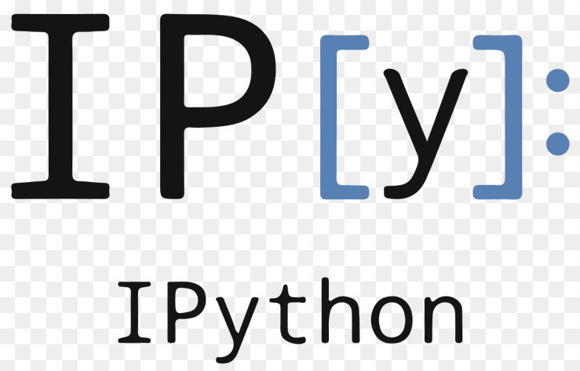
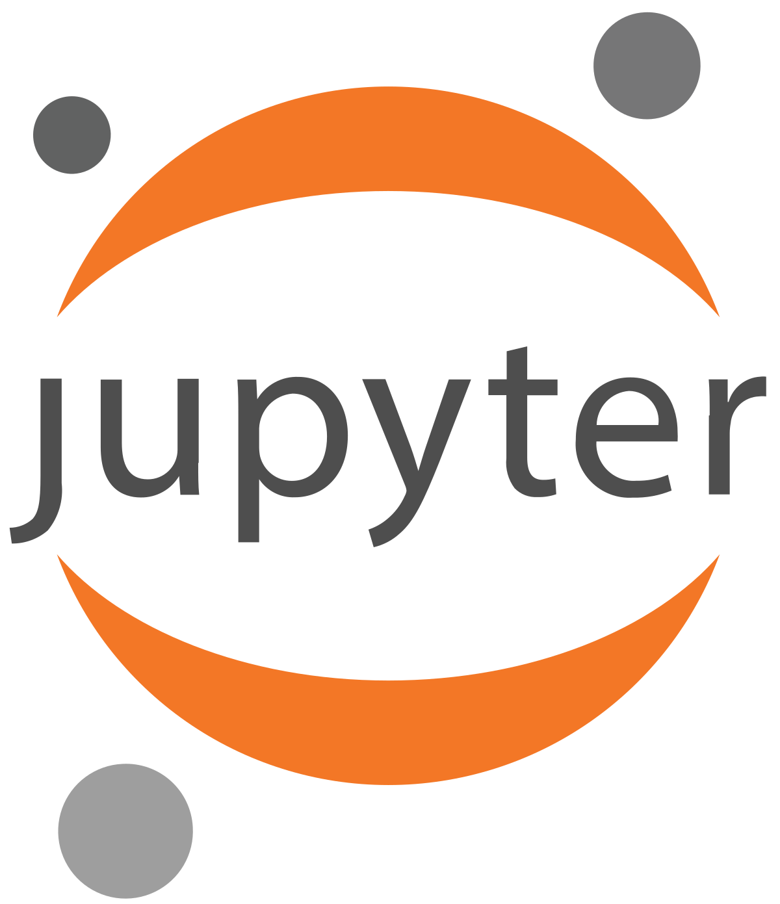

Python Data Science Stack
Technologies Big Data Master MIDS/MFA/LOGOIS
2025-01-17

- born in 1990
- designed by Guido van Rossum (BDFL)
- multi-purpose
- easy to read
- easy to learn
- object-oriented
- strongly and dynamically typed
- cross-platform
Features of Python

Python popularity growth

Python popularity growth
Numpy

-
numpyis all about multi-dimensional arrays and matrices - high-level computation such as
- linear algebra:
numpy.linalg - random number generation:
numpy.random
- linear algebra:
- Fast but not optimized for multi-threaded architectures
- Not for distributed multi-machine settings
Scipy
-
scipyextendsnumpywith extra modules:- optimization,
- integration,
- FFT, signal and image processing
- …
- Sparse matrix formats in
scipy.sparse
Pandas


-
pandasbuilds uponnumpyto provide a high-performance, easy-to-useDataFrameobject, with high-level data processing - Easy I/O with most data format :
csv,json,hdf5,feather,parquet, etc. -
SQLsemantics:select,filter,join,groupby,agg, ,where, etc. - Very large general-purpose library for data processing, not distributed, medium scale data only
Dask
-
daskis roughly a distributed and parallelpandas - Same API has
pandas! - Task scheduling, lazy evaluation, distributed dataframes
- Still young and far behind
spark, but can be useful - Easier than
spark, fullPython(noJVM)
Links
Pyspark
-
pysparkis thepythonAPI tospark, a big data processing framework - We will use it a lot in this course
- Native API to
sparkisscala:pysparkcan be slower (much slower if you are not careful)
SQLAlchemy
- Object Relational Model (ORM)
- ODBC
Pyarrow
The universal columnar format and multi-language toolbox for fast data interchange and in-memory analytics
Apache Arrow defines a language-independent columnar memory format for flat and hierarchical data, organized for efficient analytic operations on modern hardware like CPUs and GPUs. The Arrow memory format also supports zero-copy reads for lightning-fast data access without serialization overhead.
Matplotlib
 |
 |
-
matplotlibprovides versatile 2D plotting capabilities- scientific computing
- data visualization
- Large and customizable library
- The historical one, somewhat low-level when plotting things related to data
Links
Plotly
|
|
- An interactive visualization library for web browsers based on
javascriptgraphic libraryd3.js
- With a clean and simple
pythoninterface, can be used in ajupyternotebook - Interactions enabled by default (zoom, etc.) and fast rendering
- Very good looking plots with good default parameters
Links
Altair
|
|
Vega-Altair: Declarative Visualization in Python
Vega-Altair is a declarative visualization library for Python. Its simple, friendly and consistent API, built on top of the powerful Vega-Lite grammar, empowers you to spend less time writing code and more time exploring your data.
Pure Python interfaces


Ways to use all these tools
Write a script
script.pyand usepythondirectly in a CLI :python script.pyUse the
ipythoninteractive shell
Interfaces : Jupyter
- Use
jupyter: a web application that allows to create and run documents, called notebooks (with.ipynbextension) - Notebooks can contain code, equations, visualizations, text, etc. (literate programming)
- Each
notebookhas akernelrunning apython/R,Julia, … thread - A problem: a
ipynbfile is ajsondocument. Leads to bad code diff, a problem withgitversioning
Links
Thank you !